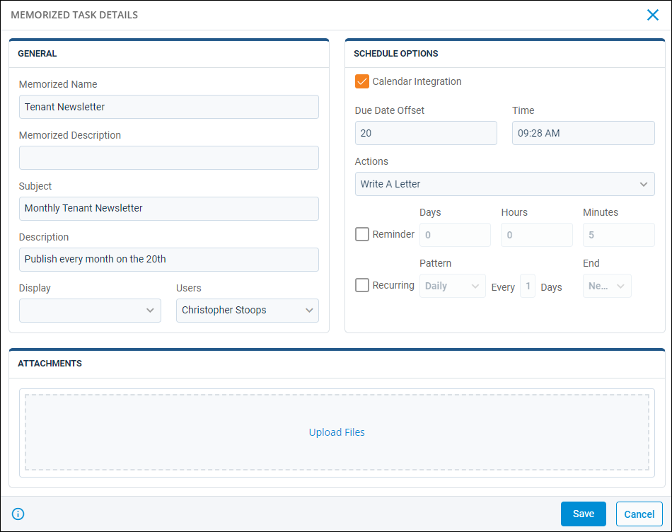
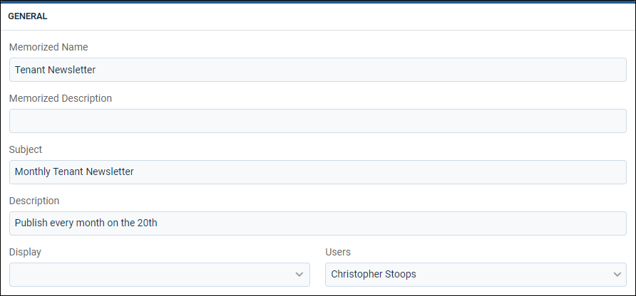
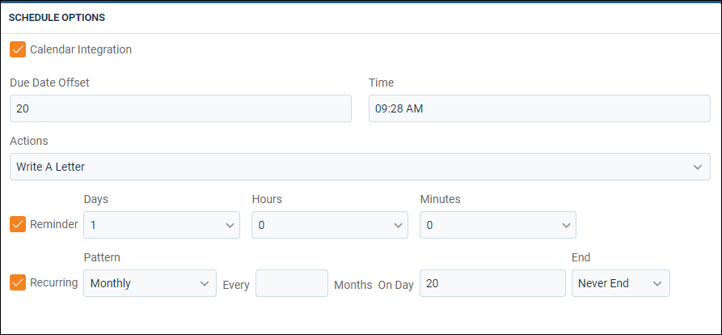

Source: https://rmxhelp.rentmanager.com/Topics/Express/CSH/Tasks-Memorized-Details.htm
Memorized Task Details (Pop-Up)
Memorized tasks are tasks that have been saved as templates to make it easier to create similar tasks in the future. You can either create a memorized task from scratch, or you can click Memorize on an existing task to save it as a template.
The Memorized Task Details pop-up allows you to view and manage general information and schedule options associated with the currently selected memorized task.
Related Privileges
| Group | Privilege | Column |
|---|---|---|
| Setup | Tasks | View, Edit |
For more information, refer to Control User Access.
To view a memorized task's details pop-up, go to  arrow_forward Services arrow_forward Calendar arrow_forward Memorized Tasks and select a memorized task from the list.
arrow_forward Services arrow_forward Calendar arrow_forward Memorized Tasks and select a memorized task from the list.

Once a memorized task is created, click  to view information about the creation date, time, and user, as well as the updated date, time, and user.
to view information about the creation date, time, and user, as well as the updated date, time, and user.
General
On this tile, general information about the memorized task can be viewed or edited.

| Field | Description |
|---|---|
|
Memorized Name |
The name and description for the task template. This is the name that displays when loading a memorized task. |
|
Memorized Description |
The comment or note which carries over to new tasks created with this template. |
|
Subject |
The topic of the task. This also displays in the calendar and on the Tasks dashboard tile. |
|
Description |
A detailed explanation of the task (e.g., Check all timecards before they are sent for processing, Put in order and write check). |
|
Display |
The color of the Subject when the task displays in lists, on the calendar, and/or in tiles. |
|
Users |
The user(s) that are allowed to view this task on their calendars. |
Schedule Options
This tile determines if the memorized task is recurring, if it has a due date, what actions need to be taken before the task can be closed, and other options related to how the task is scheduled.

| Field | Description |
|---|---|
|
Calendar Integration |
Syncs the task with an external calendar application. Related Preferences This option displays only if the calendar integration is enabled in system preferences. For more information, refer to Calendar Integration (System Preferences). |
|
Due Date Offset |
The number of days in the future that the task is due. The number of days entered in Due Date Offset are added to the current date when a new task is generated from the memorized task, and the resulting calculation displays as the task's Due Date. |
|
Time |
The time of the day the task is due. |
|
Actions |
The system-generated action that need to be taken to complete this task. Once the task is saved, when you click the task from anywhere in Rent Manager, the appropriate page opens so you can perform the task. For example, the Make Deposit action opens the Make Deposit page. |
|
Reminder |
Enables reminders for the task. Enter a value for one or more of the three provided increments (Days, Hours, and Minutes) to determine when the reminder occurs. |
|
Recurring |
This task repeats on a regular schedule in the future. Select from one of the four provided patterns (Daily, Weekly, Monthly, or Yearly) and the coordinating increment. If applicable, select an End from the drop-down list. For example, if you select End After and enter a value in the Occurrences field, you can determine how many increments the memorized task repeats before ending. |
Attachments
This tile contains any documents or images related to the task. To attach a file to the task, click Upload Files to browse your computer for a file or drag and drop a file into the upload box.